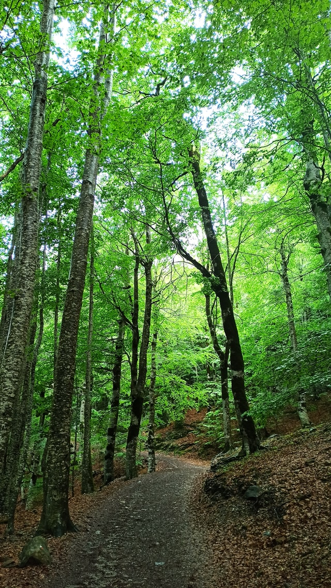

Go on a hiking adventure!
Although the Rainbow Falls Trail is difficult and will take 3-5 hours to hike, this is one of the most enjoyable and scenic hiking trails in the Smoky Mountains
Lace up your sturdy hiking boots and head out to discover the famed Rainbow Falls waterfall in the Great Smoky Mountains National Park. The 80-foot waterfall is the tallest single-drop waterfall in the national park, cascading dramatically over a jutting cliff face and then rushing over rock formations at the cliff’s base.
